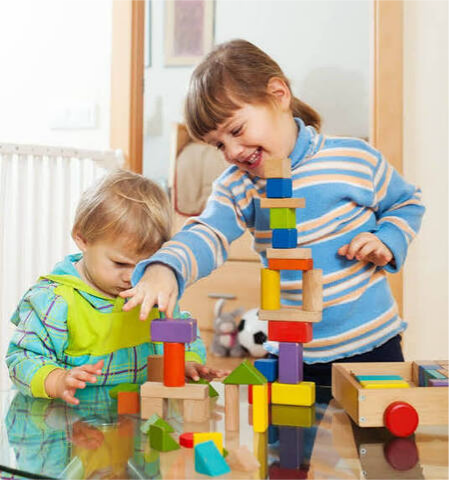
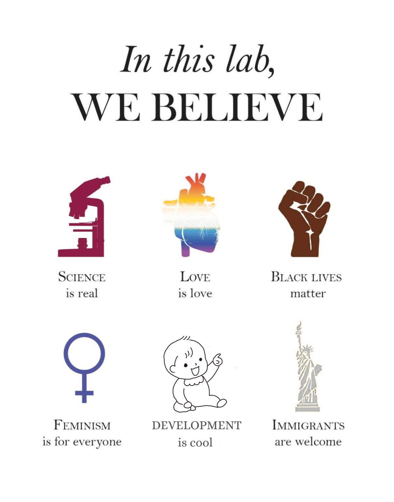

Welcome to SPARK Lab!
Welcome to the Science of Perception, Attention, & Representation in Kids (SPARK) Lab! The SPARK Lab is housed in the Department of Psychology at Oberlin College.

Here at the SPARK Lab, we’re interested in understanding how children transform everyday experiences into learning opportunities. Our primary research interests center on young children’s attention, memory, spatial skills, and the ways these abilities are shaped by caregiving and families’ lived experiences.
Early childhood is a period of remarkable growth, learning, and discovery. Children play an active role in their own development through exploration, play, and interactions with people and their environment. During these everyday experiences, children attend to information, build memories, and construct knowledge about the world around them. Opportunities for learning are embedded within families, communities, and broader environments, which shape children’s everyday experiences. Differences in these experiences shape the opportunities children have to practice and develop cognitive skills through play, exploration, and social interaction. These everyday experiences and the cognitive skills children build and learn through them are critical for school readiness and future academic achievement. Understanding how children’s everyday experiences shape the development of attention, memory, and learning may help us identify ways to support children’s later success in school and inform efforts to reduce inequities in educational attainment.

Land Acknowledgement
The SPARK Lab recognizes that Oberlin College Campus is located on the ancestral homelands of Indigenous peoples, including moundbuilders, Erie, Wyandotte, Mingo, and numerous other confederated Indigenous Nations and Peoples. We acknowledge the history of displacement and dispossession, and its intergenerational effects on families, access to educational opportunities, and lived experiences. Our research seeks to better understand how children’s lived experiences and environments shape learning and development.
Image courtesy of Sammy Katta